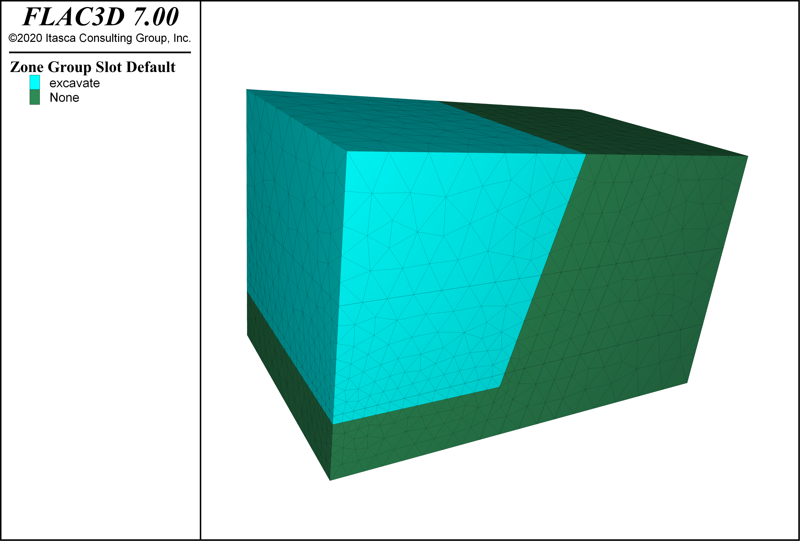
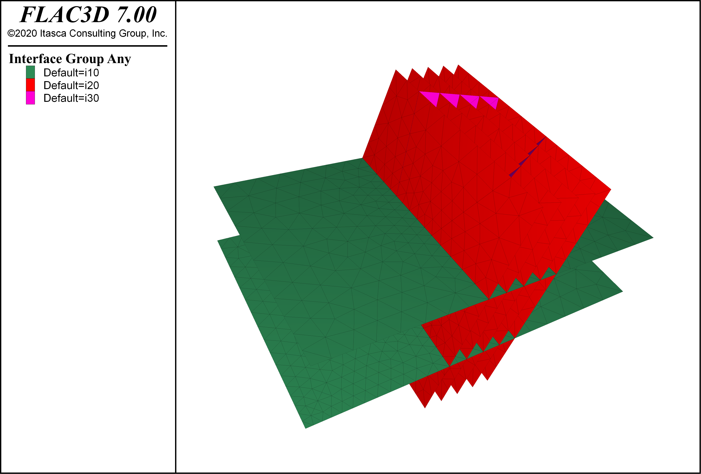
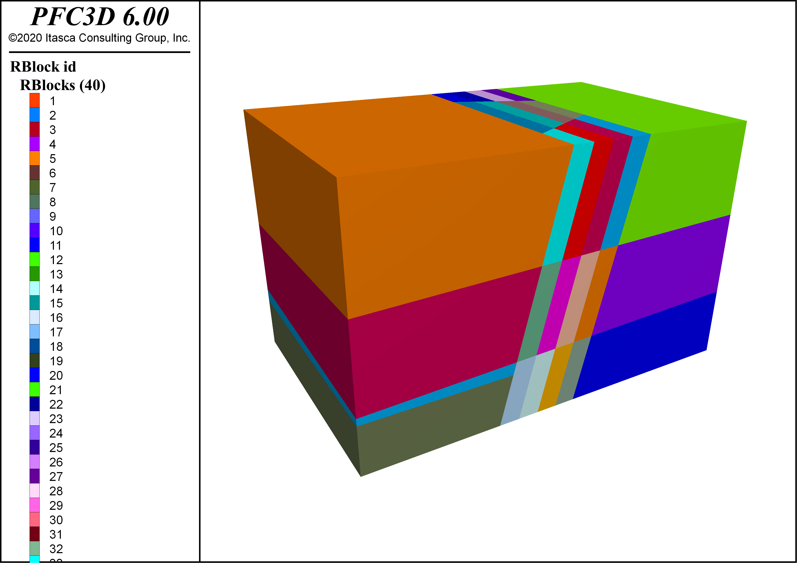
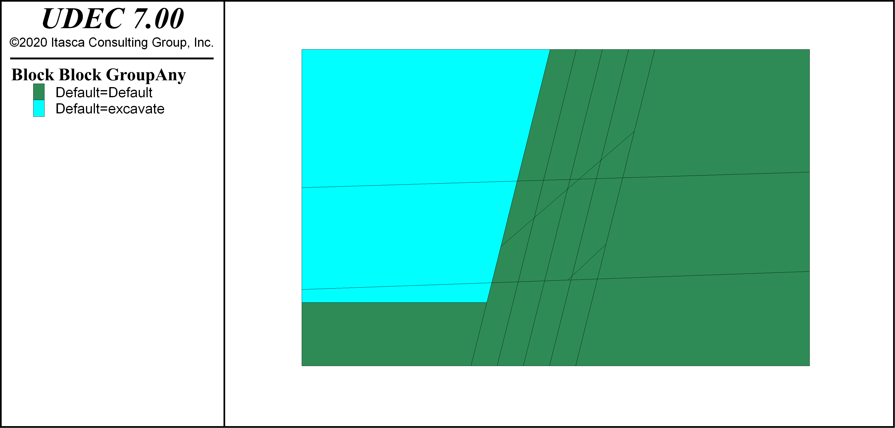

导出 3DEC 模型
3DEC 块体和网格单元可以导出到文件，再导入另一个 3DEC 模型（参阅导入与合并（Importing and Merging））。也可以导出 3DEC 模型，以供其他 Itasca 程序导入。
导出到 FLAC3D
block to-flac3d 命令可将 3DEC 网格单元和节理导出到 FLAC3D 网格文件。3DEC 网格单元将生成 FLAC3D 网格单元，3DEC 节理将生成 FLAC3D 接触面。FLAC3D 网格单元的分组名称和槽位，将采用 3DEC 块体分组的对应值。
接触面不是 FLAC3D 网格文件的一部分。因此，导出网格文件时，还会同时导出一个 FLAC3D 数据文件。该文件根据网格单元面创建接触面。接触面的分组名称由节理组 ID 前加“i”构成。这样，便可使用分组范围，方便地为不同节理组形成的接触面赋予属性。该数据文件还会自动合并已连接 3DEC 块体之间的网格点。
下例是快速入门教程（Quick Start Tutorial）的一个变体。注意，要由 3DEC 创建 FLAC3D 模型，必须先对块体划分网格。
文件 simple_wedge_3dec.dat 给出了在层状岩石中创建楔形体的 3DEC 数据文件。发出 block to-flac3d 命令后，将创建名为“3dec.dat”的 FLAC3D 数据文件，以及名为“3dec.f3grid”的网格文件。可以通过 filename 关键字提供数据文件和网格文件名称。也可以使用 binary 关键字，将输出文件设为二进制格式。
生成的 FLAC3D 数据文件见 3dec.dat。第一行导入网格。第二行合并已连接块体的网格点。更实际的模型中会有许多此类 zone gridpoint merge 命令。后续各行根据网格单元面创建接触面。最后，末尾的 FISH 函数为接触面赋予分组名称。
运行 FLAC3D 数据文件后生成的网格单元和接触面，见图 1（Figure 1） 和图 2（Figure 2）。
simple_wedge_3dec.dat
model new
model random 10000
;
block create brick (0,80) (0,50) (0,50)
;
; 创建近水平节理
block cut joint-set dip 2.5 dip-direction 235 origin 30,0,12.5 jointset-id 10
block cut joint-set dip 2.5 dip-direction 315 origin 35,0,30 jointset-id 10
;
; 创建陡倾片理
block cut joint-set dip 76 dip-direction 270 spacing 4 num 5 origin 38,0,12.5 jointset-id 20
;
; 创建底座，并识别待开挖区域
block hide range pos-x 30,80
block cut joint-set dip 0 dip-direction 0 origin 0,0,10 join
block hide range pos-z 0,10
block group 'excavate'
block hide off
; 切割楔体
block hide range pos-z 0,10
block hide range pos-x 55,80
block hide range pos-x 0,30
block cut joint-set dip 70 dip-direction 200 origin 0,35,0 jointset-id 30
block cut joint-set dip 60 dip-direction 330 origin 50,15,50 jointset-id 30
block hide off
; 划分网格
block zone generate-new
; 导出到 FLAC3D
block to-flac3d
; 导出到 PFC（块体）
block to-pfc
; 导出到 UDEC（块体）
block to-udec origin 0,25,0 dip 90 dip-direction 0
3dec.dat
zone import '3dec.f3grid'
zone gridpoint merge tol-rel 1e-6 range group 'b19' slot 'master'
===========================================================
zone interface 'i10_1' create by-face range group '10_1'
zone interface 'i20_1' create by-face range group '20_1'
zone interface 'i20_2' create by-face range group '20_2'
zone interface 'i20_3' create by-face range group '20_3'
zone interface 'i20_4' create by-face range group '20_4'
zone interface 'i20_5' create by-face range group '20_5'
zone interface 'i30_1' create by-face range group '30_1'
===========================================================
fish define interface_group
loop foreach ip interface.list
local int_name = interface.name(ip)
local pos = string.find(int_name, '_')
local ip_grp = int_name(1, pos - 1)
interface.group(ip) = ip_grp
end_loop
end
[interface_group]


图 1：导出 3DEC 模型后创建的 FLAC3D 网格单元。


图 2：导出 3DEC 模型后创建的 FLAC3D 接触面。
还提供两个可在 FLAC3D 演示模式下运行的示例，分别再现下落楔形体（falling wedge）和滑动楔形体（sliding wedge）验证问题。运行时，启动 FLAC3D，转到，并选择“3DEC/ ExampleApplications/ Users_Guide / Convert”。
导出到 PFC
使用 block to-pfc 命令，可以将 3DEC 块体或网格单元转换为 PFC 刚性块体。发出该命令后，将生成一个 PFC 数据文件，定义 PFC 刚性块体集合。默认情况下，3DEC 块体转换为 PFC 刚性块体。如果指定“by-zone”关键字，则导出四面体网格单元。分组名称和槽位信息保留在 PFC 网格中。3DEC 节理不会导出。
在 3DEC 中运行同一个简单楔形体示例（simple wedge example），并将块体导出到 PFC。默认情况下，PFC 数据文件名为“rigidblock.p3dat”，可通过 filename 关键字更改。生成的 PFC 模型见图 3（Figure 3）。本例可在 PFC 演示版中运行。


图 3：导出 3DEC 模型后创建的 PFC 刚性块体
导出到 UDEC
可使用 block to-udec，将 3DEC 模型的一个剖面导出到 UDEC。用户必须使用关键字 origin，并配合 normal，或配合 dip 与 dip-direction，指定一个平面。还可指定 filename（默认为“sectionfrom3DEC.uddat”）。生成的文件是 UDEC 数据文件，调用该文件即可在 UDEC 中创建块体。3DEC 模型的块体分组将保留在 UDEC 模型中。
由简单楔形体示例（simple wedge example）生成的 UDEC 模型见图 4（Figure 4）。该模型可在 UDEC 演示版中运行。


图 4：导出 3DEC 模型后创建的 UDEC 块体
| 这些内容对您有帮助吗？… 版权与免责声明 |
FLAC3D © 2019, Itasca | 原文更新于 2020 年 10 月 8 日 |